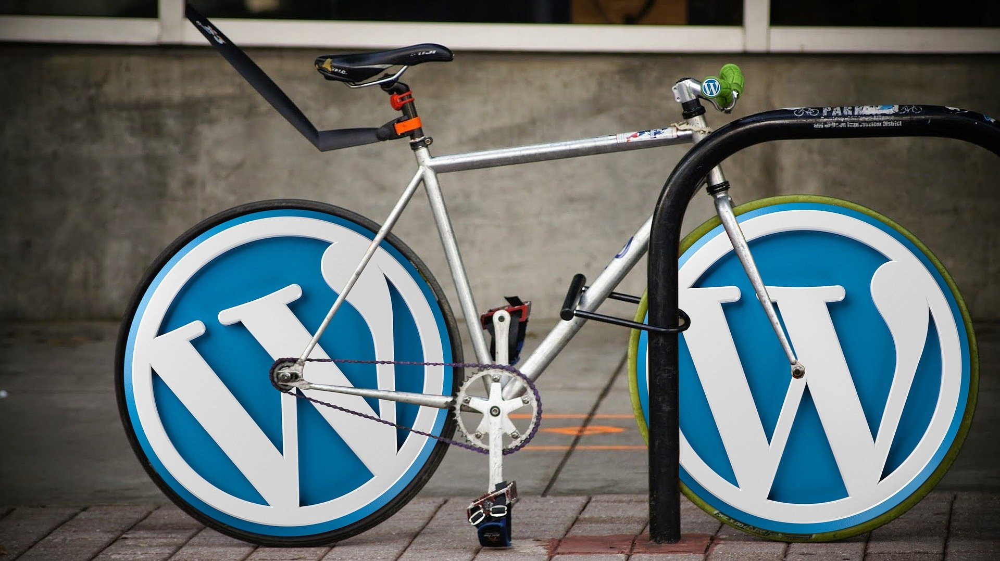

------- HEADLINE NEWS -------
Situs Web Berbasis Wordpress Akan Ditampilkan Lebih Cepat
©copyright - kompas.com

Situs web yang dibuat menggunakan Wordpress nantinya bakal bisa ditampilkan lebih cepat. Hal ini berkat pembaruan Wordpress 5.8 yang menghadirkan dukungan foto dengan format atau ekstensi file "WebP". Menurut blog resmi Wordpress, foto dengan format WebP memiliki ukuran (file size) 30 persen lebih kecil dibandingkan dengan format konvensional macam "JPEG" atau "PNG".
Sehingga, situs web yang mengusung foto berformat demikian, diklaim tak akan rakus bandwidth.
Untuk memasukkan foto WebP, pengguna Wordpress 5.8 ke atas bisa mengunggah foto tersebut dengan langkah-langkah yang sama ketika mereka mengunggah foto dengan format umum seperti JPEG atau PNG.
Namun, mereka harus memastikan lebih dulu bahwa layanan hosting yang dipakai wajib menggunakan image processing library yang mendukung berbagai foto dengan ekstensi file WebP, seperti Imagick atau LibGD. Selain itu, mereka juga harus memastikan bahwa gambarnya sudah berekstensi WebP.
Pihak Wordpress mengklaim sebagian besar aplikasi untuk mengedit foto kini bisa mengekspor atau mengonversikan foto ke WebP. Ada pula sejumlah layanan online yang bisa mengonversikan sebuah gambar ke format WebP.
Pihak Wordpress tak mengumbar secara pasti kapan Wordpress 5.8 ini diluncurkan. Namun, mereka berencana merilis pembaruan platform tersebut pada akhir Juli 2021, sebagaimana dihimpun KompasTekno dari TechRadar, Kamis (10/6/2021). Selain menghadirkan dukungan file WebP, pihak Wordpress juga berencana menghadirkan opsi atau alat untuk melakukan konversi terhadap sejumlah gambar yang diunggah melalui platform content management system (CMS) tersebut.
 Kebocoran Data Terbesar Bikin 8,4 Miliar Password Terekspos
Kebocoran Data Terbesar Bikin 8,4 Miliar Password Terekspos Mulai Sekarang, Sering-sering Buka
Akun Google Jika Hal Ini Tidak Ingin Terjadi Padamu!
Mulai Sekarang, Sering-sering Buka
Akun Google Jika Hal Ini Tidak Ingin Terjadi Padamu! Hacker Bobol Server EA, Curi Kode Penting Game FIFA 21
Hacker Bobol Server EA, Curi Kode Penting Game FIFA 21 Mulai Sekarang, Foto dari Gmail Bisa
Langsung Kamu Simpan di Google Photos
Mulai Sekarang, Foto dari Gmail Bisa
Langsung Kamu Simpan di Google Photos